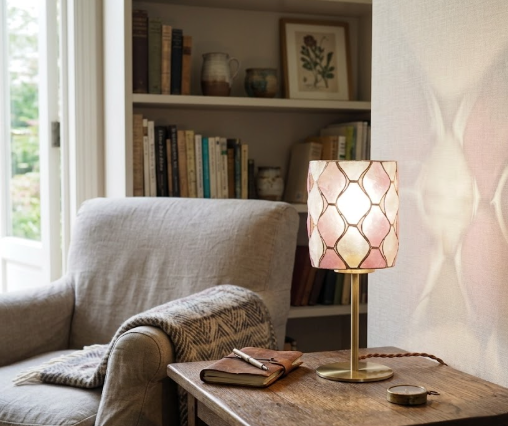
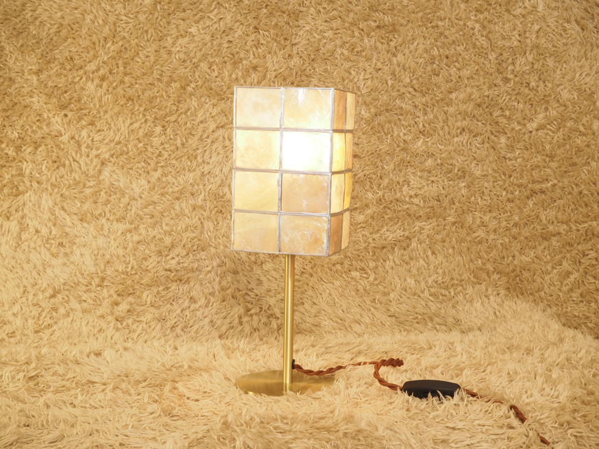
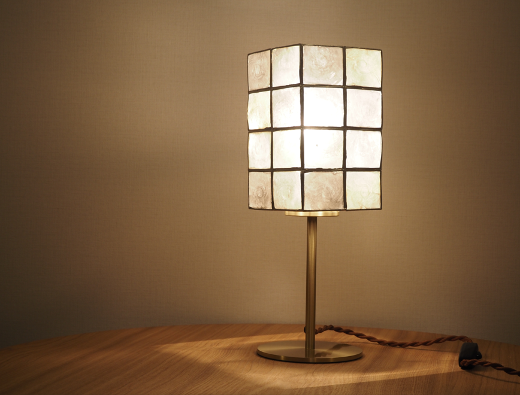
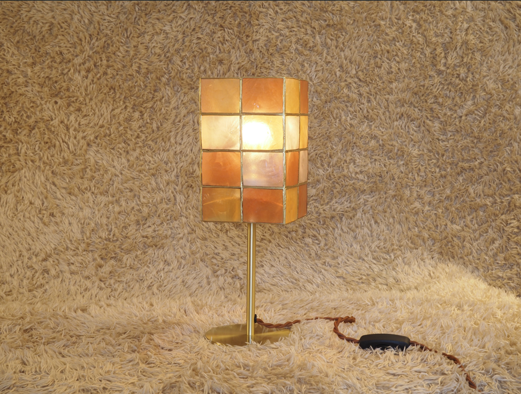
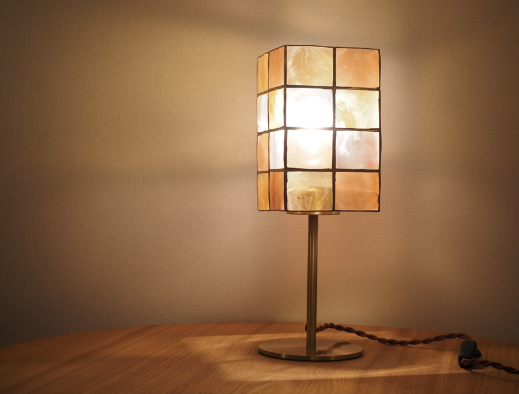
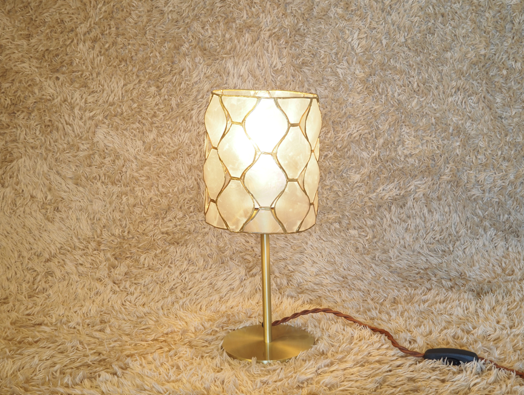
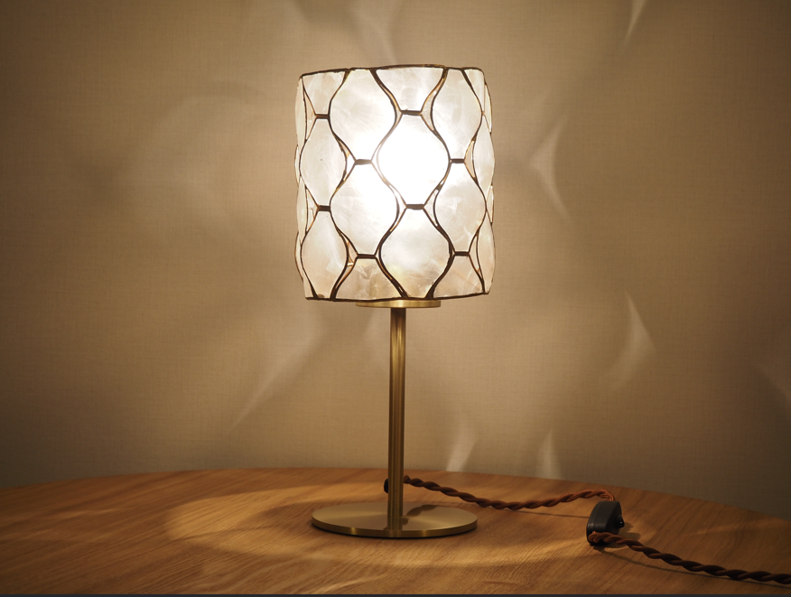
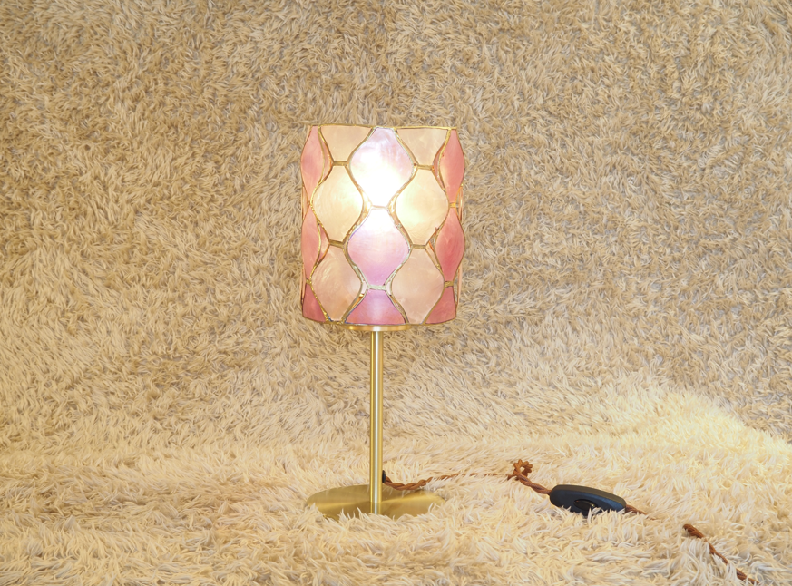
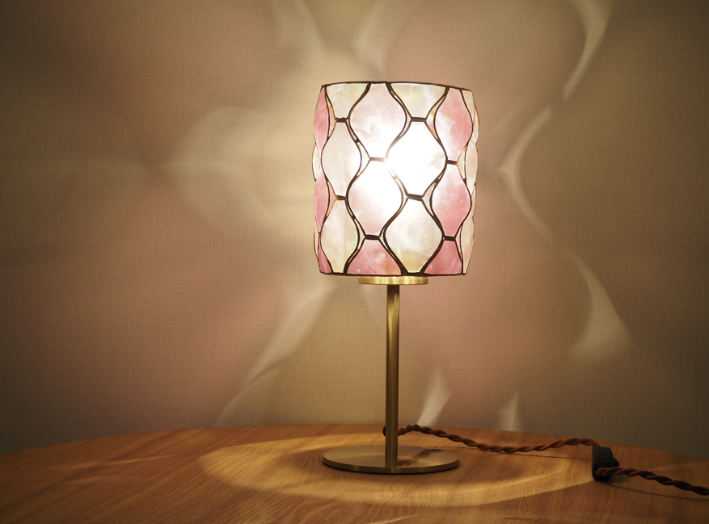

Capiz table light について
4色展開（GD/OR/NA/PU）のコンパクトなテーブルライト。
中間 ON/OFF スイッチ付きで、ベッドサイドやリビングのアクセントに。
職人の手でカピス貝を丁寧に一つ一つカットし、独特の存在感を放つ雰囲気は、
コンパクトながらも確かな存在感で、お部屋のワンポイントを演出します。


PRODUCT LINEUP
カラーバリエーション

GOLDEN
Capiz table GD
ゴールドカラーは上品でエキゾチックな雰囲気を楽しむ、
職人の手でカピス貝を丁寧にカットしたシリーズ。


ORANGE
Capiz table OR
オレンジカラーは温かみのある、優しい光で落ち着いた空間を演出します。




共通仕様
本体材質
スチール・カピス
スイッチ
中間 ON/OFF スイッチ
電球
E26/60W × 1
※ 価格・納期については、お気軽にお問い合わせください。